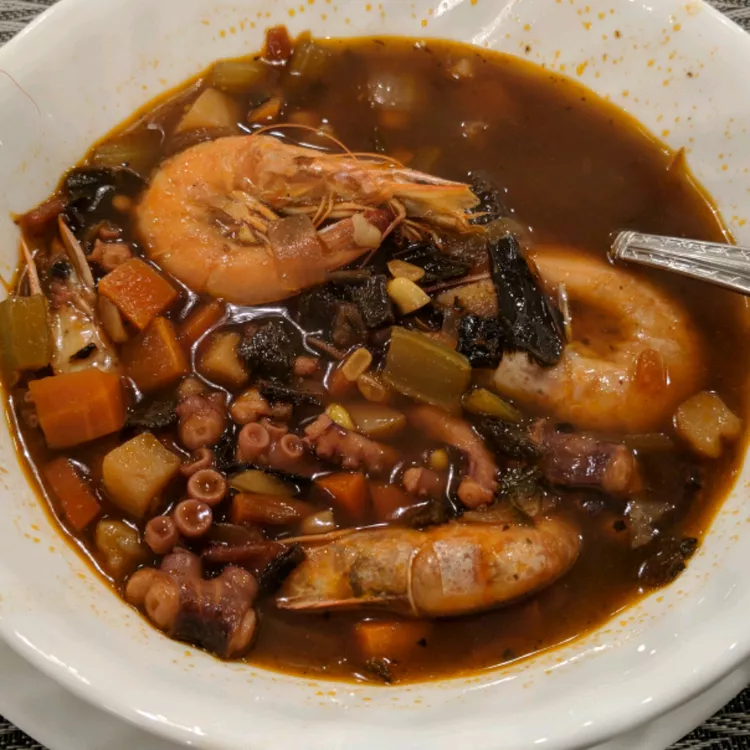

Octopus Soap

Brick-Oven Pizza (Brooklyn Style)
This simple brick-oven pizza recipe has been made
famous by several well-known, Brooklyn
wood-fire pizzerias. Best accompanied by ice-cold,
pilsner-style lager beer.
Ingredientes:
- 6 ounces low moisture mozzarella cheese, thinly sliced
- ½ teaspoon dried oregano
- ¼ teaspoon freshly ground black pepper
- ½ cup no salt added canned crushed tomatoes
Steps:
- Bake in the preheated oven until the crust begins to brown, 4 to 6 minutes.
- Make the pizzas: Remove dough from the refrigerator one hour prior to using.
- Follow Steps 5 through 9 to make the second pizza.